Create your own map
Start a climate organization map for your state or region: a network map of coalitions and the groups in them, a geographic map, and lists of events, projects and actions. Point people keep their own group’s information current through Google Forms; your core team approves everything else. It’s the code behind the MA Climate Organization Map, with Massachusetts taken out.
Everything is free: the site runs on GitHub Pages, the data lives in your Google Sheet, and the forms are Google Forms that the sheet builds for you. You edit one file, map.config.ts.
Want a yourstate.climateorgmap.earth address? See Get a climateorgmap.earth address. Your map works without one, at its GitHub Pages address.
Start your own map (about 15 minutes)
You need a GitHub account (not the one that owns the template: nobody can fork their own repo) and a Google account that should own the map’s sheet (ideally a shared team account: see Who owns what). Everything happens in the browser. The drawings below are simplified; the numbered circles are the order to click in.
Waiting: about 5 minutes of the 15, at these points (⏳ in the steps):
| Wait | When | How long | How you know it’s done |
|---|---|---|---|
| Site build | after steps 4 and 10 | about 2 minutes each | Actions tab: yellow dot = running, green ✓ = done |
| Your map’s menu | step 8, after reloading the sheet | 5–10 seconds | a Climate Organization Map menu appears after Help |
| Setup script | step 8 | 1–3 minutes | a popup “Built and shared with the core team…” |
| A form submission | step 11 | about 1 minute | it shows on the map after a reload |
On GitHub (about 4 minutes)
-
Fork. On the template’s page, click Fork (top right, between Watch and Star). Name it (e.g.
wi-climate-map), leave Copy the main branch only ticked, click Create fork.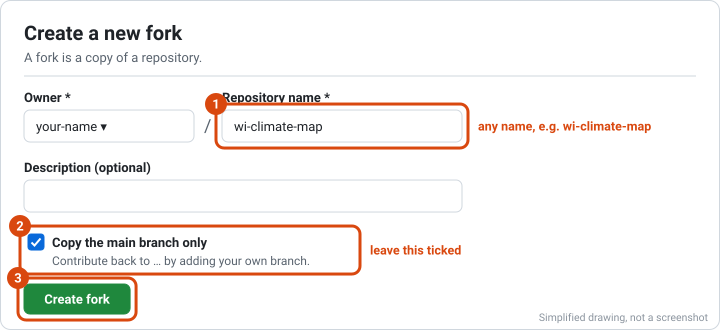
-
Turn on Actions. In your fork, click the Actions tab (the bar under the repo name) → I understand my workflows, go ahead and enable them.
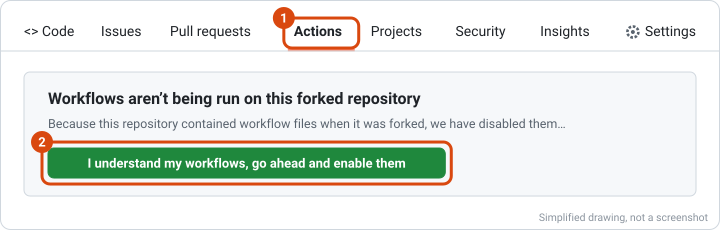
-
Turn on Pages. Settings (same bar, far right, gear icon) → Pages (left menu, under “Code and automation”) → Source: choose GitHub Actions. It saves by itself.
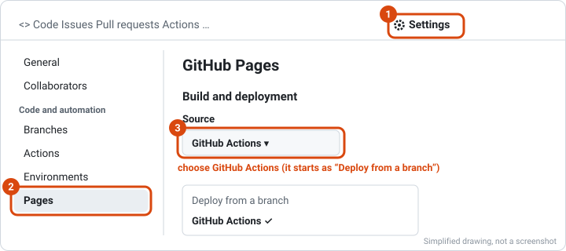
-
Name your map. Click the Code tab, then
map.config.tsin the file list. Click the pencil icon at the top right of the file (“Edit this file”).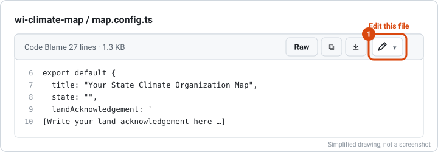
Change
title(e.g."WI Climate Organization Map") andstate(e.g."WI"), and replace the line[Write your land acknowledgement here …]with yours (keep the backticks around it). Then click Commit changes… (green, top right), choose Commit directly to the main branch, and click Commit changes.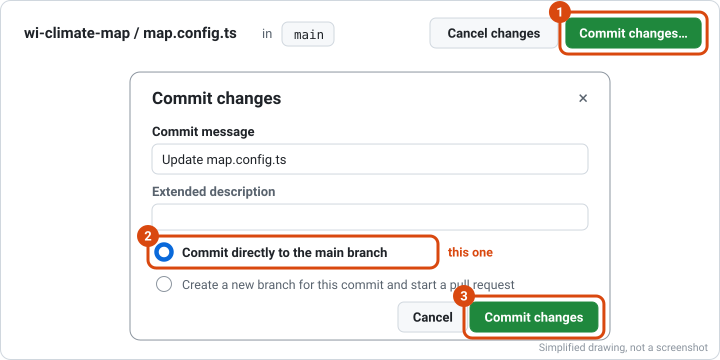
⏳ Your site now builds (about 2 minutes). Don’t wait: go on with step 5.
In Google (about 6 minutes)
-
Make the sheet. Open sheets.new (a blank Google Sheet) and name it: click “Untitled spreadsheet” at the top left, e.g. “WI Climate Organization Map data”.
-
Open your map’s setup checklist:
https://<your-github-name>.github.io/<repo-name>/setup.html. Or: Settings → Pages → Visit site and click Open the setup checklist in the note on the map. (Not there yet? The build from step 4 is still running: wait for the green ✓ on the Actions tab.) Keep this page open: it checks each step.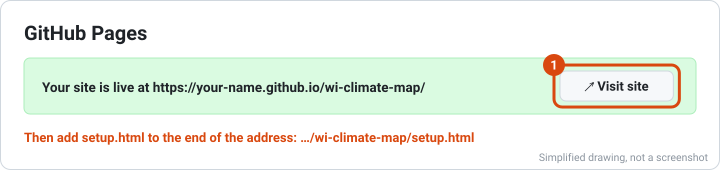
-
Paste the sheet script. On the checklist, click Copy the sheet script. In the sheet: Extensions (menu bar) → Apps Script; it opens in a new tab.
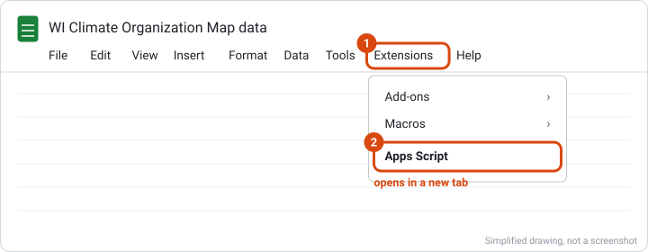
Click inside the code, select all (Ctrl+A, Mac ⌘A), paste (Ctrl+V, Mac ⌘V), and click Save (the disk icon above the code). Leave this tab open for step 9.
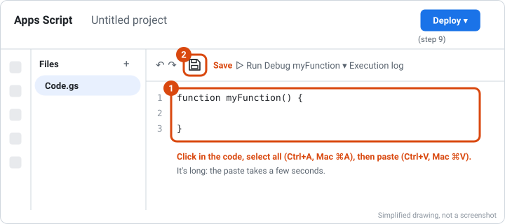
-
Set up the sheet. Go back to the sheet’s tab and reload it (the browser’s reload button). ⏳ After 5–10 seconds a Climate Organization Map menu appears at the end of the menu bar. Click it → Set up sheet + forms (run once).
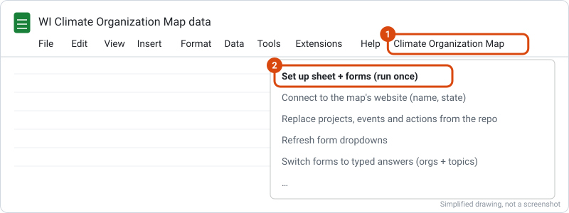
Google asks for permission: OK → choose your account → “Google hasn’t verified this app”: Advanced → Go to Untitled project (unsafe) → tick Select all → Continue. (It’s your own script; “unverified” only means Google hasn’t reviewed it.) Tick Select all: without every permission, setup fails partway.
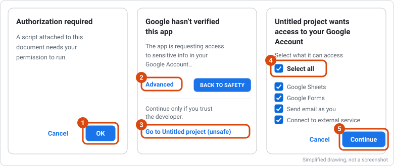
If nothing happens after Continue, click Set up sheet + forms again. It then asks two things: your map’s address (
https://<your-github-name>.github.io/<repo-name>/, also shown at the top of the checklist) → OK; and your core team’s emails, separated by commas (blank = just you) → OK.⏳ Then don’t touch anything for 1–3 minutes. The script works on its own: a “Running script” box shows at the top, and tabs and forms appear one by one. It’s done when a popup says “Built and shared with the core team…”: click OK.
-
Publish the sheet’s data. In the Apps Script tab: Deploy (blue, top right) → New deployment → click the gear next to “Select type” → Web app. Set Execute as: Me and Who has access: Anyone, click Deploy. If it shows Authorize access, click it and allow everything as in step 8 (OK, Advanced, Go to …, Select all, Continue).
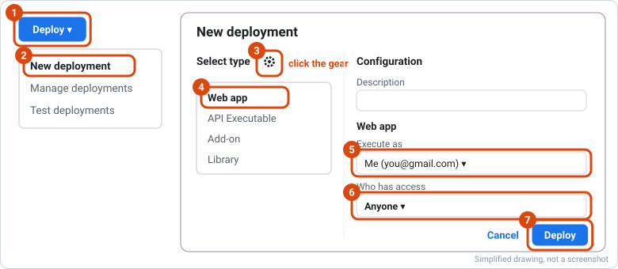
Click Copy under Web app URL (it ends in
/exec), then Done.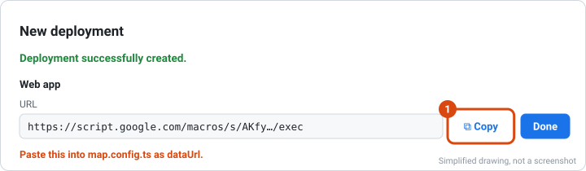
Back on GitHub (about 1 minute)
-
Connect the map to the sheet. Edit
map.config.tsagain (pencil, as in step 4): paste the URL between the quotes ofdataUrl: "". Commit changes… → Commit directly to the main branch → Commit changes. ⏳ After the build (about 2 minutes), reload the checklist: every step is green. -
Try it. Open your map, press +, and add your first group. ⏳ It shows on the map about a minute after you submit (reload the map). Delete test rows in the sheet when you’re done.
That’s it: approved form submissions show on the map within a minute, and a backup of the data is saved into the repo every night.
What map.config.ts sets
| Setting | What it’s for |
|---|---|
title | The map’s name: page title, top bar, form titles, emails, the sheet’s menu |
state | Two-letter code. Fills in where the geographic map opens, the main city (where a group with no address yet is placed), the time zone and the state name |
landAcknowledgement | Shown on the loading screen and under “Land acknowledgement” in the menu |
dataUrl | The sheet’s web app URL (step 9) |
| optional | shortTitle, timeZone, bounds, fallback, exampleTowns, exampleOrgs, geo (see src/map-config.ts) |
The sheet reads the name and state from your site, and the site reads the forms from the sheet, so nothing else is copied by hand.
Get updates
- On your fork’s GitHub page: Sync fork → Update branch. The template never changes
map.config.ts, your data or your logos, so this doesn’t conflict. Don’t edit the template’s other files in your copy. - Open your
setup.html. If Sheet script up to date isn’t green: copy the script again, paste it overCode.gs, Save, then Deploy → Manage deployments → ✏️ → Version: New version → Deploy (the URL stays the same), and run Update the forms from the sheet’s menu.
Get a climateorgmap.earth address
Maps can have an address like wi.climateorgmap.earth. To get one:
- Request: fill in the subdomain request form.
- Wait for next steps. We’ll reply with what to do. Until then, leave your fork’s Custom domain setting empty.
If a map shuts down, its DNS record is removed so the address can’t be taken over.
Who owns what
- The sheet’s script and web app run as the Google account that set them up. If that account closes, the forms stop recording and the map stops updating. Use a shared team account, or write down who takes over.
- The fork belongs to whoever made it: add a second maintainer (Settings → Collaborators).
- Share the sheet only with your core team. Point people never open it: they use the forms. On the sheet’s Editors tab, give each group’s point person (up to three) the group’s id.
How it works
| Piece | What it does | Where it lives |
|---|---|---|
| The website | The map people look at. Never changes data itself. | Your fork, published by GitHub Pages (.github/workflows/pages.yml) |
| The Google Sheet | The source of truth: every coalition, group, event, project and action, and who may edit each. | Your Google Drive |
| Google Forms | How point people add and fix their group’s information (Google sign-in; others wait in Needs Review). | Built by the sheet’s script (apps-script/Code.gs) |
The sheet’s web app publishes only public tabs (never Editors, Needs Review, Feedback or Change Log), plus the forms’ links. The site falls back to public/data.json (the nightly backup, .github/workflows/sync-data.yml) when Google is unreachable. More on the sheet: apps-script/SETUP.md.